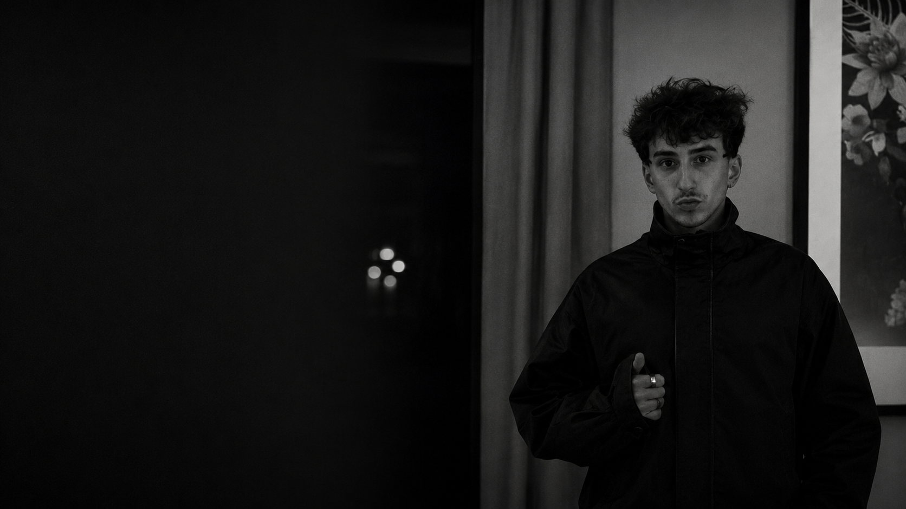
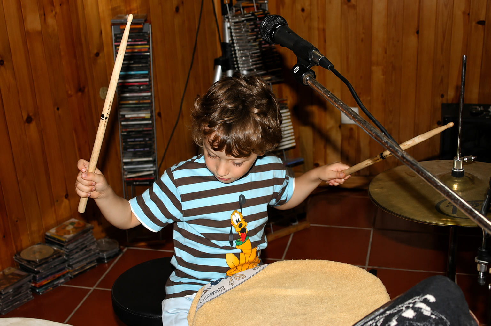
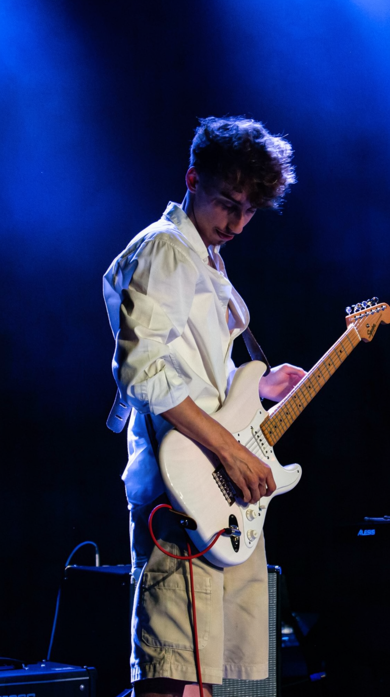
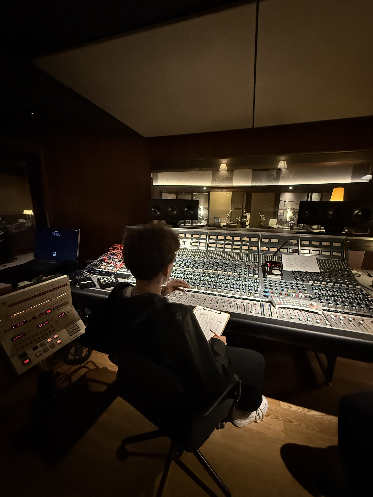
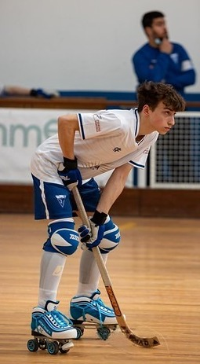
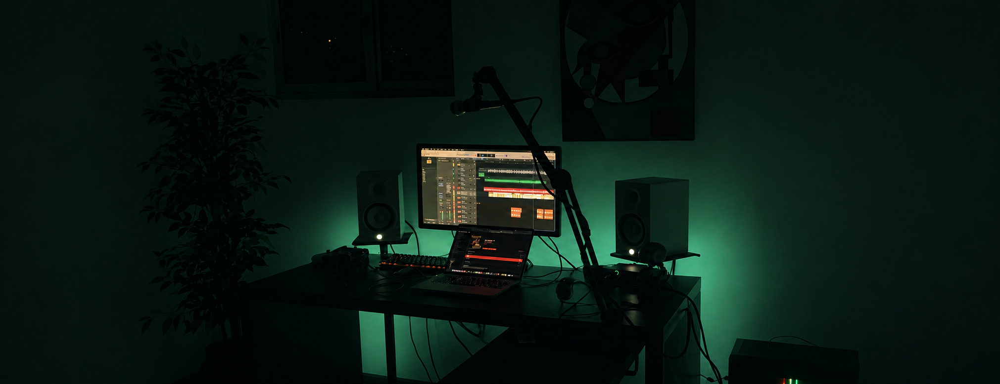

PLANO B
Short description of the performance — replace with a few lines about the night, the setlist, or the setting.

01 — Studio, PortoArtist · Music Producer · Audio Engineer
Emerging artist, music producer and mixing engineer. This portfolio is an evolving archive of my work — a place where recordings, productions and creative experiments come together to document my journey through music, audio engineering and artistic exploration.




I was born in 2005 in Vila Nova de Gaia, Portugal, where my passion for music began at an early age. As a child, I studied classical guitar for around three years, an experience that first introduced me to music and laid the foundations for the path I would eventually follow.
Alongside music, I dedicated much of my youth to roller hockey, playing for Clube Hóquei dos Carvalhos and later for Associação Desportiva Sanjoanense for approximately eleven years. Although sport became a significant part of my life, my passion for music never disappeared—it simply waited for the right moment to become my main focus.
That moment came when I entered higher education. I initially enrolled in Licenciatura em Engenharia Eletrotécnica e de Computadores at the Instituto Superior de Engenharia do Porto (ISEP). After later transferring to Licenciatura em Engenharia Informática, I realised that my true ambition was elsewhere. Rather than continuing down an engineering path, I decided to fully dedicate myself to music.
Today, I am studying Produção e Tecnologias da Música at the Escola Superior de Música e Artes do Espetáculo (ESMAE), where I continue to develop both my technical knowledge and creative approach to music.
My main interests lie in music production, recording, mixing and audio engineering. I enjoy every stage of the creative process—from capturing performances to shaping the final sound—but I also enjoy writing music for myself as a way of experimenting, learning and developing my own artistic identity.

Short description of the performance — replace with a few lines about the night, the setlist, or the setting.


Short description of the performance — replace with a few lines about the night, the setlist, or the setting.


Short description of the performance — replace with a few lines about the night, the setlist, or the setting.